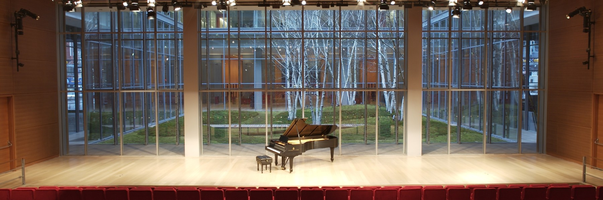
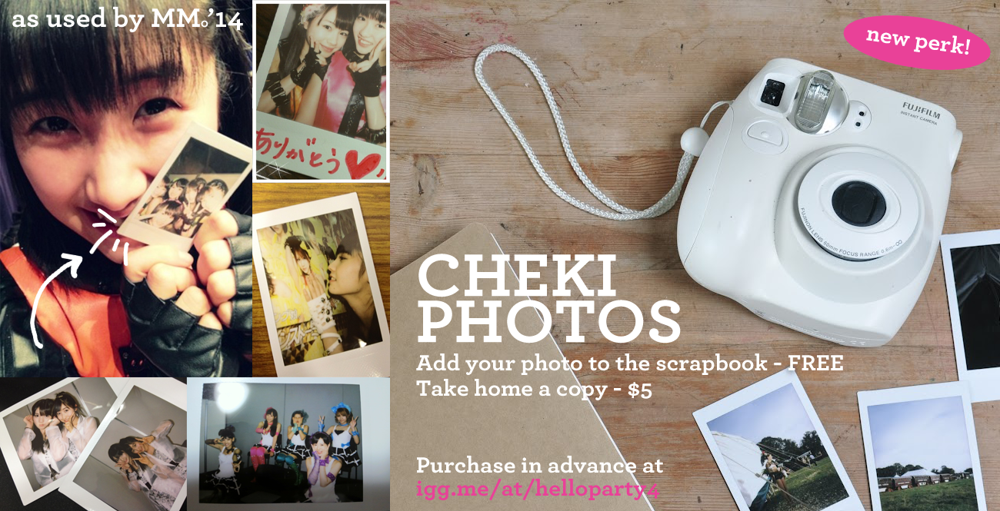

October 4th, 2014 · The TimesCenter · 7pm–10pm (Doors open at 6:30)
242 West 41st Street, New York, NY 10036
The primere event for Hello! Project fans. Brought to you by the couple behind Hello! Base, Hello! Party was created as a way to celebrate when a Hello! Project group comes to the US. The events have had a little bit of everything from dancing to performances to karaoke, but the main focus are the audience-participation games (inspired by those that Hello! Project groups have played themselves).
Follow the event on Twitter (#helloparty4) and on Facebook!

Welcome to The TimesCenter, where we're excited to take Hello! Party's venue to a whole new level. (See more photos on our Facebook page.)
Located in the heart of the Times Square district (not far from the Best Buy Theater), it has been host to events for ABC, Microsoft, The Onion, and Starbucks. The 378-seat capacity house – along with the spacious and stylish lobby – is all ours for the evening. The TimesCenter is ready to help create amazing memories and we can't wait to see you all there.

We invite you to help create a gift for Morning Musume｡’14.
Idols often have "cheki" (Japanese polaroid) events where you take a photo with the idol to keep as a memento. It's time to turn the tables – this time, the photos will be a memento for the members. There will be a cheki station at Hello! Party 4 where you can get your photo taken, decorate it, and add it to a scrapbook that wil be gifted to the members at the handshake event.
Adding your photo to the scrapbook is free, though you can purchase additional photos for only $5.
We present the official line-up of games that you'll see at Hello! Party 4.
If you've been to a Hello! Party before, you may notice some familiar titles listed here. We're bringing back the best games of Hello! Party 1, 2 and 3, some of them with a new twist. If this will be your first time – get ready for hilarity and fun.
Participants will be chosen at random based on seat number (except for those that purchased Game Participation perks on IndieGogo). They'll be representing teams, and the team with the most points at the end of all games will earn special prizes. Good luck!
Fans pitched in to make Hello! Party 4 the best one yet.
We raised over $4,000 on our IndieGogo campaign with over 130 contributions. Perks included exclusive T-shirts, discounted entrance, VIP seating, and more. Thanks, everyone!
To our backers that requested a little bit of that "Internet Fame," here it is along with our sincere thanks. This party is able to happen in large part because of your generosity.
You've got questions? We've got answers. If you have a question that doesn't appear here, contact us on Twitter or Facebook, or send an e-mail to party@hello-base.com.
Hello! Party is an event held by the creators of Hello! Base to celebrate a Hello! Project group coming to the US. At the event there are games, dancing, performances, and general fun for all kinds of fans of Hello! Project. Watch our IndieGogo video for some footage of past events!
The party is Saturday, October 4th at The TimesCenter (242 West 41st Street). The venue is walking distance from both TimesSquare and the Best Buy Theater. Doors open 6:30pm, games begin at 7 and end at 9pm. That's when the dancing begins!
You should aim for 6:30pm (EST) if possible. Games begin at 7pm, but you still have to check in, take pictures of the displays and venue, find your seat, and you should add your photo to the scrapbook that will be Hello! Party's gift to Morning Musume｡’14. You can come late, but you'll miss out on some of the fun!
Information on what subway lines or buses you can take to arrive at the TimesCenter can be found on their website.
The higher cost of venues in New York City unfortunately made free entry impossible this time around. But we did our best to keep costs low for attendees: Until October 3rd, you can purchase entrance for only $15 through EventBrite. The at-the-door price will be $20.
Absolutely! There is no tape or adhesive allowed in the venue, but we will be putting up wire and clips to hang microfiber towels, tapestries, or other idol goods. We will also set out a table if you wish to leave freebies for your fellow fans to take.
We will have staff keeping inventory of who owns what, and also keeping an eye out to make sure nobody takes something that isn't theirs. However, there is never a 100% guarantee. Please use your own judgment on what you bring and how safe you feel putting it out there – for example, rare or valuable items might be best left at home.
Hello! Party 4 T-shirts and other perks were exclusively available through our fundraising campaign on IndieGogo. They are no longer available, but who knows – request them on Twitter and Facebook and maybe we'll bring them back by popular demand!
There will be no food, and water for drinks. We strongly recommend you eat before coming, or bring something to much on in the lobby (must be finished or thrown out before you enter the Stage area). Please refrain from bringing alcohol, though!